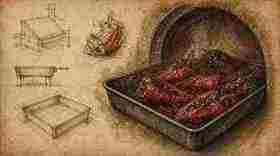
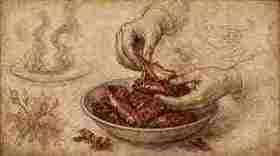
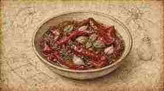
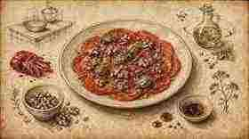

01
Forno a 220 °C per 20 minuti.
Oven at 220 °C for 20 minutes.

Ratanà · Ricetta V · Tutorial
Ratanà · Recipe V · Tutorial
Peperoni rossi arrostisti, spellati e marinati — struttura Fooby, tavole illustrate in stile Leonardo come i tutorial Italia Squisita.
Roasted red peppers, peeled and marinated — Fooby structure, Leonardo-style illustrated plates like the Italia Squisita tutorials.
← Scheda del quaderno ← Notebook cardForno a 220 °C per 20 minuti.
Oven at 220 °C for 20 minutes.

Raffreddare e spellare.
Cool and peel.

Marinare con sale, pepe, olio, aglio, basilico, origano e aceto; in frigo un paio di giorni se possibile.
Marinate with salt, pepper, oil, garlic, basil, oregano and vinegar; refrigerate a couple of days if possible.

Impiattare come carpaccio; finire con noci, erbette, basilico, pepe e olio+aceto della marinata.
Plate like a carpaccio; finish with walnuts, herbs, basil, pepper and oil+vinegar from the marinade.
